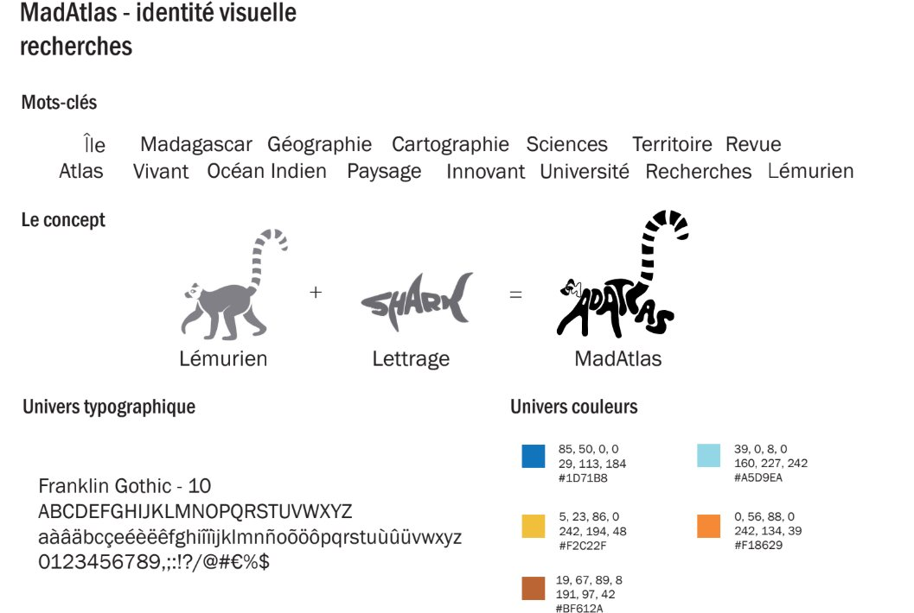

As part of a university project for MadAtlas, I designed a logo deeply rooted in Madagascar's identity. I chose to feature the lemur, a representative animal and emblem of the island. This direct nod to Malagasy wildlife celebrates its unique biodiversity while creating an authentic connection to the region. A design created to bring the project closer to its ecosystem and roots.
